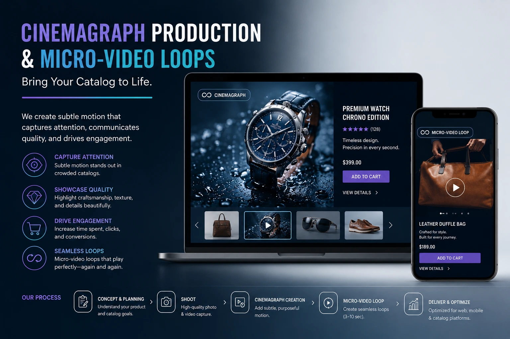

Integrating Cinemagraphs and Short Motion Clips into Your Digital Product Catalog
Why Static Catalogs Are Losing the Attention Battle
The digital product catalog — the organised, visual presentation of a brand's product range across its website, marketplace listings, and social media — is the primary sales environment for most Indian e-commerce brands. And it is an environment that is becoming progressively more competitive as every brand raises the baseline visual quality of its static photography. In 2026, a product page with excellent white background photography, a lifestyle image, and a close-up detail shot is the expected minimum — not the competitive advantage it was three years ago.
The competitive advantage in 2026 is motion. Cinemagraph product photography, micro-video loops, and mixed-media brand assets that integrate moving elements in still photography contexts do something that static photography cannot: they trigger the visual attention system's movement detection response — the involuntary neurological reaction that draws the eye to movement in a static field. In a product grid where every other brand's thumbnail is static, a thumb-stopping product frame with a single moving element is the equivalent of the only lit window on a dark street. The eye goes there first, every time.
This guide covers exactly how cinemagraph product photography, micro-video loops, looping brand visuals, and modern catalog presentation patterns work — and how to integrate them into a complete website visual production strategy that earns attention and converts it.
Cinemagraph Product Photography: The Art of Selective Motion
A cinemagraph is one of the most technically demanding and visually distinctive formats in website visual production — a still photograph in which one isolated element moves in a seamless, infinite loop while the rest of the image remains completely static. When produced with the craft and intentionality that the format demands, a cinemagraph is among the most attention-commanding visual formats available across any digital channel.
The specific production workflow for professional cinemagraph product photography:
- Shoot planning for loop-able motion. Not all motion loops seamlessly. The production planning for a cinemagraph must identify a motion element that has a natural, repetitive cycle — fabric billowing in a consistent breeze, steam rising from a consistent heat source, a pour that can be repeated from a starting position, a candle flame in a controlled environment. Motion elements that are random or irregular cannot be looped seamlessly and should not be selected for cinemagraph production.
- Stable camera and controlled environment. The static elements of a cinemagraph are the background — the product, the set, any static props. These must remain perfectly still across the entire recording duration. Any camera movement, vibration, or shift in the static elements produces a visible shudder in the finished cinemagraph that destroys the illusion of a static photograph with a moving element. A tripod-mounted camera, a cable release or remote trigger, and a controlled shooting environment are non-negotiable.
- Video capture at minimum 60fps for smooth loop creation. The video footage used to create the cinemagraph should be captured at 60 frames per second or higher to provide the editor with sufficient frame density to create a smooth loop without the step-frame motion that lower frame rates produce in looping motion. The higher frame rate also provides the option to slow the motion slightly in post-production, creating a more elegant and deliberate quality of movement.
- Precision masking of the motion element in post-production. The core technical step in cinemagraph creation is the precise frame-by-frame masking of the motion element — painting out the movement area from the static background frame and replacing it with the looping video footage. This masking work is where the technical quality of the cinemagraph is determined: sloppy masking produces visible edge artefacts that break the illusion; precise masking produces a seamless result where the transition between static and moving is invisible.
- Loop point creation and seamless transition. The beginning and ending frames of the looping video segment must match closely enough that the loop transition is imperceptible. This requires identifying the loop points in the footage where the motion element returns to its starting position — or using a crossfade blend at the loop point that hides the transition through a brief opacity blend rather than a hard cut.

Micro-Video Loops: The Versatile Motion Asset for Digital Catalogs
Micro-video loops — two to four second seamlessly looping video clips — are the most versatile motion asset in a brand's mixed-media brand assets library. Unlike cinemagraphs, which require precise compositing work and are most effective for specific product types, micro-video loops are applicable across virtually every product category and every digital channel where a brand distributes its visual content.
The production approach that produces usable micro-video loops from a standard product shoot:
- Plan the loop action before the shoot. The most effective micro-video loops are built around a single, simple action that has a natural visual start and end point: the pour of a liquid, the laying down of a product on a surface, a hand picking up and placing a product, a fabric being shaken out into a flat lay, a product being rotated to a new angle. Define the specific action before the shoot and brief the team accordingly.
- Shoot the action multiple times from the same angle. The loop is created from the best repetition of the action — the one with the cleanest motion, the best light catch, and the most natural pacing. Shooting five to ten repetitions of each action on the same camera position provides the editor with sufficient options to select the ideal loop segment.
- Use a consistent, controlled background. The background of a micro-video loop should be as controlled as a standard product photography background — white, textured, or styled consistently with the brand's visual identity. An inconsistent or cluttered background creates visual distraction that undermines the product's visual priority in the loop.
- Optimise the loop duration for the intended context. A two-second loop that repeats frequently creates more visual energy than a four-second loop — which is appropriate for high-energy product categories (food, beauty, fashion) but potentially too intense for premium or luxury product contexts where a slower, more deliberate four to six second loop communicates restraint and quality.
Moving Elements in Still Photography: The Hybrid Format
Between the fully static photograph and the fully moving video lies a hybrid format that is increasingly used in premium website visual production and social media content: the still photograph with integrated motion elements. In its simplest form, this is the cinemagraph. In more complex applications, it involves layering multiple motion elements — a fabric that moves, a steam element, and a light shimmer — onto a single static product photograph to create a rich, multi-layered visual environment that communicates multiple sensory qualities simultaneously.
The strategic application of moving elements in still photography for Indian product categories:
Food and Beverage
- Steam rising from chai or hot biryani — communicating warmth and freshness
- Honey or syrup drizzle in motion — communicating texture and richness
- Carbonation bubbles rising in a beverage — communicating effervescence
- Smoke wisping from a tandoor dish — communicating heat and aroma
Textiles and Fashion
- Dupatta or saree pallu caught in a gentle breeze — communicating fabric weight and drape
- Lehenga skirt spreading in a slow spin — communicating volume and fall
- Silk catching light as it shifts — communicating sheen and quality
- Embroidery detail catching movement — communicating hand-crafted texture
Beauty and Jewellery
- Serum or oil drop falling into a pool — communicating formula richness
- Jewellery catching and throwing light in rotation — communicating brilliance
- Perfume mist dispersing — communicating fragrance and atmosphere
- Hair strands lifting in movement — communicating product lightness and hold
Interactive E-commerce Layouts: Placing Motion Where It Converts
Interactive e-commerce layouts that incorporate motion assets perform differently depending on where in the page layout the motion appears. Not all motion placements are equally effective — and some motion placements actively reduce conversion by distracting from the product's visual priority or slowing the page's perceived performance.
The effective placement strategy for motion assets in interactive e-commerce layouts:
- Homepage and collection page hero: autoplay looping background video. A muted, autoplay micro-video loop as the hero section's background creates immediate visual engagement without requiring user interaction. The loop should be subtle enough to serve as a background — not so visually complex that it competes with the overlaid text and CTA buttons. Optimal: a slow pan across a product scene, a gentle lifestyle motion, or a single motion element against a controlled background.
- Product grid: hover-state motion. In a product collection grid, motion triggered by cursor hover — the static product thumbnail replacing with a short motion clip or cinemagraph when the cursor moves over the product tile — creates a progressive disclosure of motion that engages browsers without overwhelming the page with simultaneous animation. This technique is most effective for fashion and lifestyle product categories where the motion element demonstrates a key product quality (drape, movement, texture).
- Product page gallery: position 2 or 3 in the image sequence. On the product page, the motion asset should appear as the second or third gallery image — after the static hero that provides product clarity, and before the lifestyle image that creates desire. At position 2 or 3, the motion asset is encountered by a buyer who is already interested in the product and is actively evaluating its qualities — which is precisely the moment when a cinemagraph demonstrating fabric drape or a micro-video loop showing a product pour is most commercially effective.
- Email marketing: animated GIF from the cinemagraph. Cinemagraph footage can be exported as high-quality animated GIFs for use in email marketing campaigns — email clients do not support autoplay video but support animated GIFs. A cinemagraph-derived GIF in an email campaign's hero section dramatically increases the visual distinctiveness of the email in a crowded inbox and drives higher click-through rates than static image emails across the same audience.
- Social media feed: the motion advantage in a static environment. In an Instagram or LinkedIn feed where the majority of posts are static images, a cinemagraph or micro-video loop posted as a video stops the scroll through the movement detection response before the viewer has consciously evaluated the content. The thumb-stopping advantage of motion in a static feed context is the most commercially powerful application of thumb-stopping product frames across all distribution channels.
Looping Brand Visuals: Building a Motion Identity System
Looping brand visuals — a coherent library of motion assets that share consistent visual identity across colour treatment, motion style, and compositional approach — are the motion equivalent of a brand's static photography style guide. A brand with a coherent looping brand visuals library is as recognisable in motion as it is in still imagery — each motion asset reinforcing the same visual language that the static catalog has established.
Building a looping brand visuals library requires planning at the same level of intentionality as building a static photography style guide:
- Define the brand's motion personality before producing the first asset. Is the brand's motion language slow and deliberate (communicating luxury and quality) or energetic and rapid (communicating vitality and excitement)? Does it use warm, amber-toned light (communicating warmth and intimacy) or cool, neutral light (communicating precision and modernity)? These motion personality decisions should be documented and applied consistently across every asset in the library.
- Consistent colour grading across all motion assets. A brand whose cinemagraphs are graded differently from its micro-video loops, which are graded differently from its social media reels, produces a fragmented visual identity in motion that undermines the brand recognition built through static photography consistency. The colour grade applied to motion assets should match the colour treatment of the brand's static photography.
- Consistent motion speed and style. Slow-motion footage communicates deliberateness and quality; real-time footage communicates authenticity and energy; time-lapse footage communicates transformation and process. A brand should define the motion speed register appropriate to its positioning and apply it consistently across the library.
- Plan for seasonal and campaign updates. A looping brand visuals library is not a one-time production — it requires seasonal refresh as products change and campaign contexts shift. Planning seasonal motion asset production in advance — as part of the same shoot planning that produces static seasonal catalog images — is significantly more efficient than producing motion assets reactively.
Modern Catalog Presentation Patterns: The Technical Integration Checklist
Modern catalog presentation patterns that incorporate motion assets require specific technical implementation to perform correctly across the range of devices and connections that Indian shoppers use. The technical integration checklist for motion assets in e-commerce catalogs:
- Format: WebM as primary, MP4 as fallback. WebM provides superior compression to MP4 at equivalent quality — producing smaller file sizes for the same visual output. Most modern browsers support WebM; serve MP4 as a fallback for browsers that do not. Never embed autoplay video in a catalog layout as an MP4 without a WebM version — the file size difference is significant on mobile connections.
- File size targets for catalog motion assets. Homepage hero loop: under 3MB. Product page gallery motion clip: under 1.5MB. Collection grid hover-state clip: under 500KB. Social media version: under 10MB (platform limits vary). Exceeding these targets causes perceptible load delay on Indian mobile 4G connections — which is where the majority of catalog browsing occurs.
-
Autoplay attributes: muted, loop, playsinline. All autoplay catalog
video embeds must include the
mutedattribute — browsers will not autoplay video with audio without explicit user interaction. Includeloopfor looping content andplaysinlineto prevent iOS Safari from opening the video in a fullscreen player on mobile devices. -
Poster attribute for perceived load performance. Include a
posterattribute on every video embed — pointing to a static JPEG or WebP thumbnail of the first frame — so the browser displays the thumbnail immediately while the video loads, preventing the blank white space that appears during video buffer time on slower connections. -
Lazy load motion assets below the fold. Autoplay video that loads
immediately on page arrival consumes bandwidth and processing resources before the
user has scrolled to see it. Use the
loading="lazy"attribute or an Intersection Observer JavaScript implementation to defer the loading of motion assets until they enter the viewport. -
Respect reduced motion preferences. Include a CSS media query
for
@media (prefers-reduced-motion: reduce)that replaces motion assets with their static poster frames for users who have enabled the reduced motion accessibility setting on their devices. This is an accessibility requirement and an increasingly expected standard in e-commerce web development.
Conclusion
Cinemagraph product photography, micro-video loops, and mixed-media brand assets that integrate moving elements in still photography contexts are not niche creative experiments for large brands with large production budgets. They are commercially available, technically accessible, and competitively significant visual formats that are actively differentiating Indian e-commerce brands whose static photography quality has converged with their competitors.
Looping brand visuals in interactive e-commerce layouts earn the visual attention that static photography can no longer guarantee in a competitive product grid. Thumb-stopping product frames with motion elements stop the social media scroll before the algorithm's distribution reaches its ceiling. Modern catalog presentation patterns that integrate motion thoughtfully — in the right positions, in the right formats, at the right file sizes — deliver engagement and conversion improvements that justify the additional production investment within a single product season.
At The PhD Ads, we produce cinemagraph product photography, micro-video loops, and complete mixed-media brand assets for Indian e-commerce brands — from the technical production of seamless loop assets to the website visual production strategy that integrates motion into every touchpoint where your audience makes purchase decisions.
Key Topics
Ready to Add Motion to Your Digital Product Catalog?
At The PhD Ads, we produce cinemagraph product photography, micro-video loops, and mixed-media brand assets for Indian e-commerce brands — from production through technical integration into Shopify, marketplace listings, and social media, built for brands ready to stop the scroll with motion.
Email: team@e2o.in